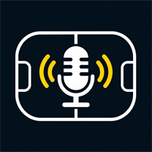

Bygg din match.
Läs på om lagen, gå igenom spelarna och samla vinklarna du vill ha med till sändningen.
Trupp · form · research
CommentatorFrån första researchen till sista slutsignalen. Samla matchdata, spelarkoll och egna anteckningar på ett ställe — och hitta nästa sak att prata om.
Dator, mobil och surfplatta. Samma konto.
Laguppställningar, spelare och bakgrund inför matchen.
Samla underlaget till dina egna vinklar.
”Fråga tränaren om kedjornas roller inför nedsläpp.”
Händelser och statistik när officiell data publiceras.
Öppna spelare och kedjor medan du kommenterar.
Matchdata och research nära till hands i sändningen.
Skriv efter samtalet med spelaren eller tränaren.
Synka sparade anteckningar mellan dina enheter med samma konto.
Researchen är din — cockpiten håller den nära.
Välj liga för att fortsätta till ditt lag och din cockpit.
Norra & Södra
Trupp · matchdata · research
Norr · Väst · Öst · Syd
Statistik · matchfeed · research
Nationell serie
Trupp · matchdata · researchDu står för rösten och analysen.
Cockpiten hjälper dig att hålla ihop underlaget.
Läs på om lagen, gå igenom spelarna och samla vinklarna du vill ha med till sändningen.
Trupp · form · researchHa matchfeed, statistik och spelaruppgifter samlade. Öppna rätt underlag när du behöver det.
Matchfeed · kedjor · spelareGå tillbaka till egna anteckningar och ta hjälp av AI-stöd när du vill pröva en ny vinkel.
Notes · bakgrund · AI-stödFörbered på datorn. Anteckna i mobilen. Ta med en surfplatta till arenan. Layouten anpassar sig efter skärmen — du använder samma adress och konto.
Commentator Cockpit är i privat beta. Kontakta info@swnworks.se om du vill testa. Du loggar in med en personlig länk via e-post, och får åtkomst till godkända lag eller ligor.
Ja. Samma adress anpassar sig efter skärmen. Du kan också lägga till sidan på hemskärmen och öppna den som en webbapp.
Verktyget använder importerad serie- och matchdata från bland annat Swehockey och Leijonat. Innehållet beror på vad källorna har publicerat. Egna anteckningar och AI-stöd är separata redaktionella underlag.
Logga in med samma konto och godkänd behörighet. Vänta på ”Sparat i molnet” innan du byter enhet. Matchdata och molnsynk kräver internetanslutning.